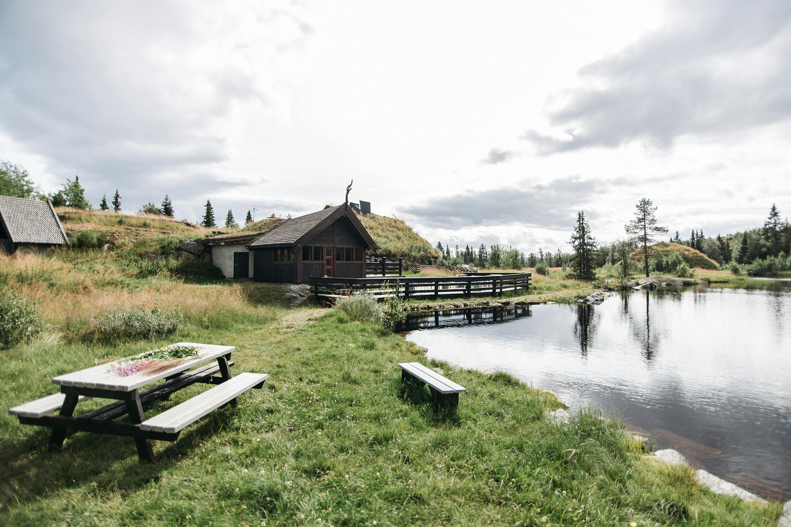

We are a family owned and operated company where we belive that life can pull us away from everything that is truly important to us. Family, friends, lovers, and even ourselves. We feel like it is so easy to get caught up in the every day grind of life that we forget to live and spend time on our selves and loved ones. So we created lakeside cabins with people in mind. Our Great Grandparents left us a rundown cabin by a lake in the 1980s when they passed. When we went to check it out at first we were overwhelmed with the work it needed. When we told our friends and family about it they thought we should all pitch in to fix it up as a retreat/vaction spot. So we all chipped in financially and started taking turns enjoying my Great grandparents old cabin then one day we said "hey we are not using this all the time lets make it available when we are not using it. The next thing we new we were struggling to make room in our schedules to visit so we started buying land and adding cabbins every few acres hidden behind trees to keep the nature feel and now here we are today with 15 cabins none visible from another and thinking about adding more.
